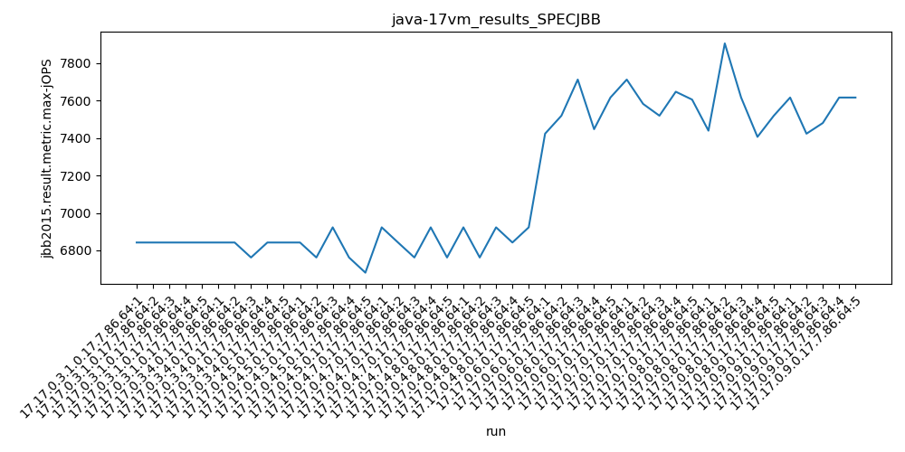
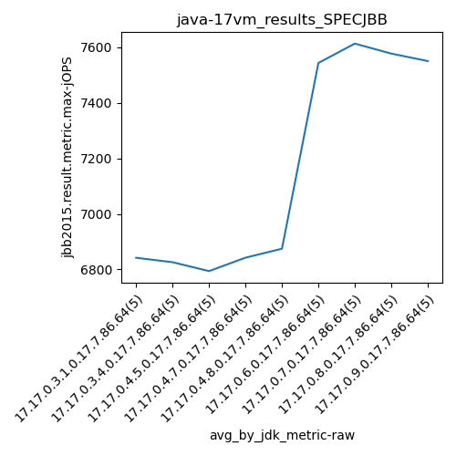
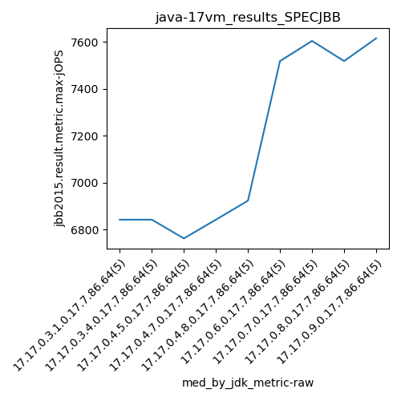
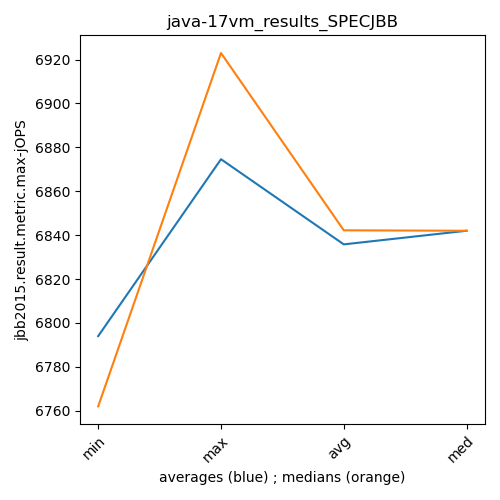
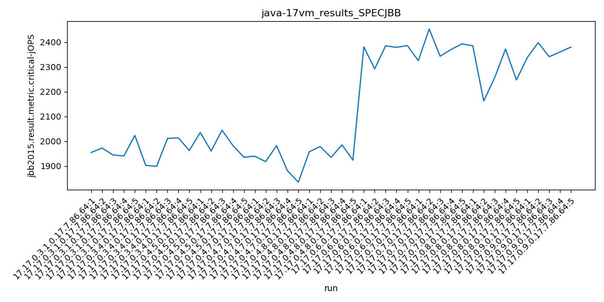
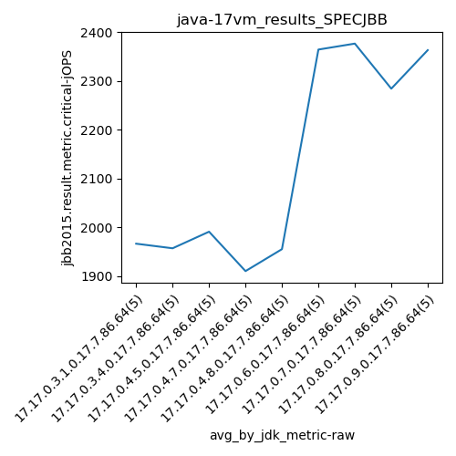
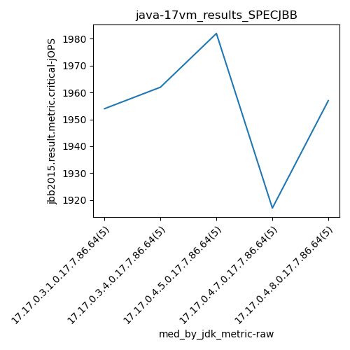
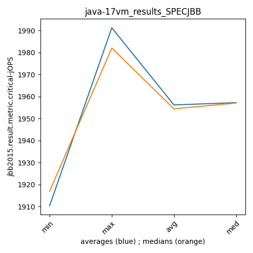

java-17 SPECJBB
Context at bottom
/home/jvanek/git/benchmarks-in-nested-virtualisation-toolchain/final_results/vm_results/vm_results_RADARGUNs1
java-17
SPECJBB
/home/jvanek/git/benchmarks-in-nested-virtualisation-toolchain/final_results/vm_results/vm_results_RADARGUNs3
java-17
SPECJBB
/home/jvanek/git/benchmarks-in-nested-virtualisation-toolchain/final_results/vm_results/vm_results_DACAPO
java-17
SPECJBB
/home/jvanek/git/benchmarks-in-nested-virtualisation-toolchain/final_results/vm_results/vm_results_J2DBENCH
java-17
SPECJBB
/home/jvanek/git/benchmarks-in-nested-virtualisation-toolchain/final_results/vm_results/vm_results_SPECJBB
java-17
SPECJBB
vm_results_SPECJBB
- vm_results_SPECJBB - max-jops
- vm_results_SPECJBB - critical jops
vm_results_SPECJBB - max-jops
Expected number of java-17 JDKs: 9
1st avgmed_alljdks_metric:
/home/jvanek/git/benchmarks-in-nested-virtualisation-toolchain/final_results/result_processing.py /home/jvanek/git/benchmarks-in-nested-virtualisation-toolchain/final_results/vm_results/vm_results_SPECJBB jbb2015.result.metric.max-jOPS False
values: [6842, 6842, 6842, 6842, 6842, 6842, 6842, 6762, 6842, 6842, 6842, 6762, 6923, 6762, 6681, 6923, 6842, 6762, 6923, 6762, 6923, 6762, 6923, 6842, 6923, 7423, 7519, 7712, 7447, 7616, 7712, 7582, 7519, 7647, 7605, 7439, 7905, 7616, 7406, 7519, 7616, 7423, 7480, 7616, 7616]

Expected number of iterations: 5
final number of values: 45 out of 45
Pass rate: 100.0%
values: (6681, 7905, 7162.511111111111, 6923)

** accuracy from all jdks and runs
more is better
MIN: 6681
MAX: 7905
AVG: 7162.511111111111
MED: 6923
Relative differences 1:
MIN-MAX: 15.0 %
MIN-AVG: 7.0 %
MIN-MED: 3.0 %
MAX-MIN: -18.0 %
MAX-AVG: -10.0 %
MAX-MED: -14.0 %
AVG-MED: -3.0 %
stored to java-17.properties. sort | uniq that!
2nd avgmed_by_jdk_metric:
values: [6842.0, 6826.0, 6794.0, 6842.4, 6874.6, 7543.4, 7613.0, 7577.0, 7550.2]

values: [6842, 6842, 6762, 6842, 6923, 7519, 7605, 7519, 7616]

values: (6794.0, 7613.0, 7162.511111111111, 6874.6)
values: (6762, 7616, 7163.333333333333, 6923)

** accuracy from all jdks where runs were avged
more is better
MIN: 6794.0
MAX: 7613.0
AVG: 7162.511111111111
MED: 6874.6
Relative differences 1:
MIN-MAX: 11.0 %
MIN-AVG: 5.0 %
MIN-MED: 1.0 %
MAX-MIN: -12.0 %
MAX-AVG: -6.0 %
MAX-MED: -11.0 %
AVG-MED: -4.0 %
stored to java-17.properties. sort | uniq that!
** accuracy from all jdks where runs were medianed
more is better
MIN: 6762
MAX: 7616
AVG: 7163.333333333333
MED: 6923
Relative differences 1:
MIN-MAX: 11.0 %
MIN-AVG: 6.0 %
MIN-MED: 2.0 %
MAX-MIN: -13.0 %
MAX-AVG: -6.0 %
MAX-MED: -10.0 %
AVG-MED: -3.0 %
stored to java-17.properties. sort | uniq that!
vm_results_SPECJBB - critical jops
Expected number of java-17 JDKs: 9
1st avgmed_alljdks_metric:
/home/jvanek/git/benchmarks-in-nested-virtualisation-toolchain/final_results/result_processing.py /home/jvanek/git/benchmarks-in-nested-virtualisation-toolchain/final_results/vm_results/vm_results_SPECJBB jbb2015.result.metric.critical-jOPS False
values: [1954, 1972, 1944, 1940, 2023, 1902, 1898, 2011, 2013, 1962, 2035, 1960, 2044, 1982, 1935, 1939, 1917, 1982, 1880, 1834, 1957, 1978, 1934, 1985, 1923, 2381, 2292, 2385, 2379, 2386, 2325, 2453, 2343, 2370, 2393, 2385, 2162, 2256, 2372, 2247, 2338, 2398, 2341, 2360, 2380]

Expected number of iterations: 5
final number of values: 45 out of 45
Pass rate: 100.0%
values: (1834, 2453, 2130.0, 2023)

** accuracy from all jdks and runs
more is better
MIN: 1834
MAX: 2453
AVG: 2130.0
MED: 2023
Relative differences 1:
MIN-MAX: 25.0 %
MIN-AVG: 14.0 %
MIN-MED: 9.0 %
MAX-MIN: -34.0 %
MAX-AVG: -15.0 %
MAX-MED: -21.0 %
AVG-MED: -5.0 %
stored to java-17.properties. sort | uniq that!
2nd avgmed_by_jdk_metric:
values: [1966.6, 1957.2, 1991.2, 1910.4, 1955.4, 2364.6, 2376.8, 2284.4, 2363.4]

values: [1954, 1962, 1982, 1917, 1957, 2381, 2370, 2256, 2360]

values: (1910.4, 2376.8, 2130.0, 1991.2)
values: (1917, 2381, 2126.5555555555557, 1982)

** accuracy from all jdks where runs were avged
more is better
MIN: 1910.4
MAX: 2376.8
AVG: 2130.0
MED: 1991.2
Relative differences 1:
MIN-MAX: 20.0 %
MIN-AVG: 10.0 %
MIN-MED: 4.0 %
MAX-MIN: -24.0 %
MAX-AVG: -12.0 %
MAX-MED: -19.0 %
AVG-MED: -7.0 %
stored to java-17.properties. sort | uniq that!
** accuracy from all jdks where runs were medianed
more is better
MIN: 1917
MAX: 2381
AVG: 2126.5555555555557
MED: 1982
Relative differences 1:
MIN-MAX: 19.0 %
MIN-AVG: 10.0 %
MIN-MED: 3.0 %
MAX-MIN: -24.0 %
MAX-AVG: -12.0 %
MAX-MED: -20.0 %
AVG-MED: -7.0 %
stored to java-17.properties. sort | uniq that!
/home/jvanek/git/benchmarks-in-nested-virtualisation-toolchain/final_results/vm_results/vm_results_JMH
java-17
SPECJBB
pass rates:
vm_results_SPECJBB=100.0%
Context:
- vm_results
- SPECJBB